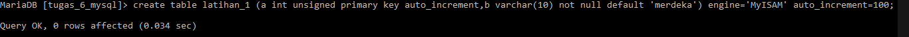

Tugas 6
-
Buat tabel latihan_1 dengan dua kolom, a dan b dengan spesifikasi:
- Kolom a di definisikan sebagai INTEGER, memiliki atribut UNSIGNED, di set sebagai PRIMARY KEY dan penomoran otomatis AUTO_INCREMENT.
- Kolom b di definisikan sebagai VARCHAR yang sanggup menampung maksimal 10 karakter. Jika kolom ini tidak diisi, string ‘merdeka’ akan menjadi string default. Kolom b juga tidak bisa diisi nilai NULL.
- Tabel latihan_1 menggunakan storage engine MyISAM serta charset ascii. Nomor urut auto increment dimulai dari 100.
- Silahkan buat tabel latihan_1 dengan spesifikasi diatas sebelum lanjut ke nomor 2.
- Ubah storage engine tabel latihan_1 menjadi InnoDB.
- Ubah nama kolom b menjadi c dari tabel latihan_1, dimana kolom c ini juga memiliki tipe data yang sama dengan kolom b (termasuk atribut).
- Tambah kolom baru bernama b ke dalam tabel latihan_1. Kolom b di definisikan dengan tipe data DATE. Jika kolom b tidak diisi nilai, tanggal 01-01-2018 akan menjadi nilai default. Tempatkan kolom b setelah kolom a. Artinya, setelah langkah ini dijalankan tabel latihan_1 akan memiliki 3 kolom: a, b dan c.
- Buat tabel latihan_2 yang memiliki struktur sama persis seperti tabel latihan_1.
- Ubah storage engine tabel latihan_2 menjadi MEMORY.
- Ubah nama tabel latihan_2 menjadi latihan_3.
- Buat temporary table dengan nama latihan_4. Tabel ini berisi 1 kolom a sebagai TIMESTAMP.
- Hapus tabel latihan_1, latihan_3 dan latihan_4 dalam 1 perintah query.
Jawaban
-
Buat tabel latihan_1 dengan dua kolom, a dan b dengan spesifikasi:
- Kolom a di definisikan sebagai INTEGER, memiliki atribut UNSIGNED, di set sebagai PRIMARY KEY dan penomoran otomatis AUTO_INCREMENT.
- Kolom b di definisikan sebagai VARCHAR yang sanggup menampung maksimal 10 karakter. Jika kolom ini tidak diisi, string ‘merdeka’ akan menjadi string default. Kolom b juga tidak bisa diisi nilai NULL.
- Tabel latihan_1 menggunakan storage engine MyISAM serta charset ascii. Nomor urut auto increment dimulai dari 100.
- Silahkan buat tabel latihan_1 dengan spesifikasi diatas sebelum lanjut ke nomor 2.


-
Ubah storage engine tabel latihan_1 menjadi InnoDB.

-
Ubah nama kolom b menjadi c dari tabel latihan_1, dimana kolom c ini juga memiliki tipe data yang sama dengan kolom b (termasuk atribut).

-
Tambah kolom baru bernama b ke dalam tabel latihan_1. Kolom b di definisikan dengan tipe data DATE. Jika kolom b tidak diisi nilai, tanggal 01-01-2018 akan menjadi nilai default. Tempatkan kolom b setelah kolom a. Artinya, setelah langkah ini dijalankan tabel latihan_1 akan memiliki 3 kolom: a, b dan c.

-
Buat tabel latihan_2 yang memiliki struktur sama persis seperti tabel latihan_1.

-
Ubah storage engine tabel latihan_2 menjadi MEMORY.

-
Ubah nama tabel latihan_2 menjadi latihan_3.

-
Buat temporary table dengan nama latihan_4. Tabel ini berisi 1 kolom a sebagai TIMESTAMP.

-
Hapus tabel latihan_1, latihan_3 dan latihan_4 dalam 1 perintah query.